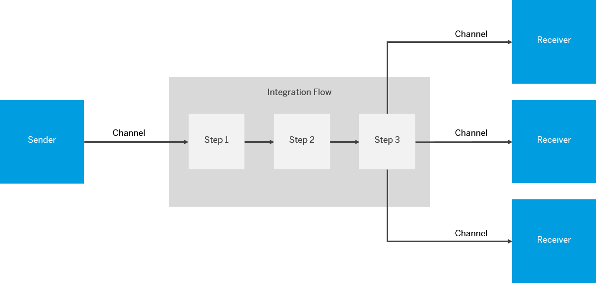

An integration flow allows you to specify how a message is processed on a tenant.
You can use integration flows to specify specific integration patterns like mapping or routing.
A graphical editor allows you, the integration developer, to model the message processing steps and specify in detail what happens to the message during processing.
In detail, you define the following aspects in an integration flow:
The following figure provides a simplified and generalized representation of an integration flow.
Senders and Receivers
You define a participant of an integration scenario as a sender or receiver. The senders and receivers typically represent the customer systems that are connected to the tenant and exchange messages with each other.
Connectivity (Adapters)
An integration flow channel allows you to specify which technical protocols should be used to connect a sender or a receiver to the tenant.
To specify an adapter, click the connection arrow between the sender/receiver and the Integration Process box.
Message Processing (Steps)
You use integration flow steps to specify what should happen to a message during processing. Various step types support the wide range of integration capabilities of the Cloud-based integration platform.
Message Flows
You use message flows to connect various integration flow elements.